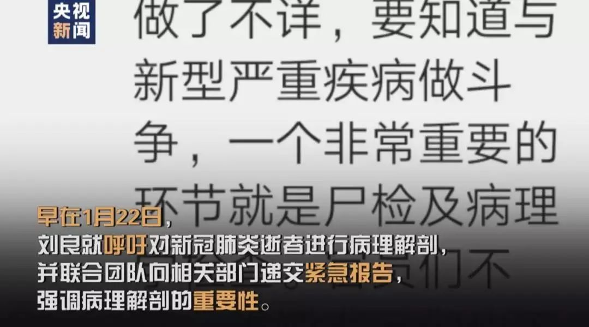
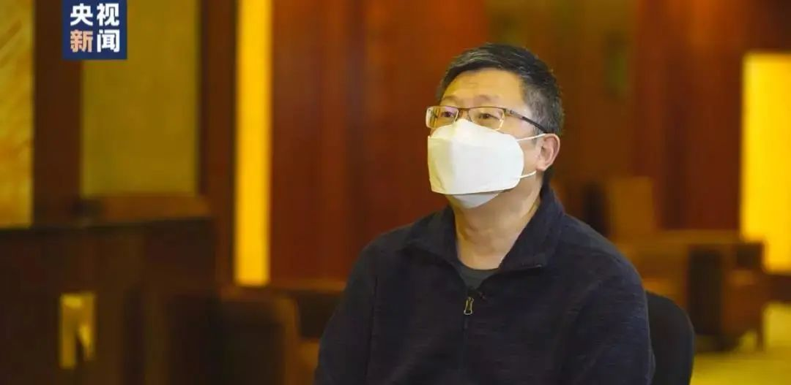

解剖遗体法医刘良：如果患者气道粘液没化解，给氧会起反作用
原文链接 备份链接 *************▲*************刘良和他的团队，右二为刘良。 （校方供图/图） 全文共1927字，阅读大约需要5分钟。 临床治疗上，如果粘液没有被化解的情况下给患者单纯给氧，可能达不到目的，有时 …
**微信公号“央视新闻”**
自2月16日凌晨完成第一例新冠肺炎逝者遗体解剖之后，华中科技大学同济医学院法医系教授、湖北省司法鉴定协会会长刘良与其团队至今已经获得了9例逝者的病理样本。日前，央视记者就新冠肺炎逝者遗体解剖一系列的问题专访了刘良。
遗体解剖的目的是什么？
记者：解剖新冠肺炎逝者遗体，并对重要信息进行研究，是出于什么目的？
刘良：目的是要搞清楚这个病毒伤害了病人的什么地方，我们叫“靶器官”。我们要探讨病毒的传播途径，还要针对这个地方研究用药。此外，还要弄明白这个病毒是通过什么机制让肺受到损伤的。如果找准的话，就可以针对性地采取保护性措施。如果没有解剖的话，基本上就搞不清楚对手，也搞不清楚它打击你的方向，是茫然的。
首例解剖手术为何迟迟未进行？
早在1月22日，刘良就呼吁对新冠肺炎逝者进行病理解剖，并联合团队向相关部门递交紧急报告，强调病理解剖的重要性。然而第一例新冠肺炎逝者遗体解剖手术直到2月16日才进行，这期间刘良团队遇到了什么难题？

刘良：首先，场地保证不了，解剖场地必须是要负压的，但我们国家只有负压的实验室，没有负压的解剖室。此外，伦理方面，我们还要征求死者家属的同意，要面对面去沟通。这包括时间和空间上的问题，所以难度很大。
记者：您在等待的过程中心态是怎样的？
刘良：我着急，因为不断有人死去，然后都很茫然。如果早一天知道病变，对临床治疗是非常有价值的。
家属同意捐献遗体，手术室改造为解剖间
2月15日下午，刘良接到通知，有家属同意捐献亲人的遗体做病理解剖，武汉金银潭医院同意将一间小手术室改造为解剖间。

刘良：这个医院的手术室是一个带负压的空间，比较适合解剖。我们把里面非必要的东西全部清走了，还有一个要注意的是，不造成室内一些血迹的污染。因为除了空气以外，它还对地面和对下水有影响。
记者：您进去之前要做什么样的防护？
刘良：我们跟临床医生一样，要做各种防护，当然我们的防护级别要高。我们戴三层手套，两层口罩，帽子戴两层或者三层，然后护目镜加上防护屏。服装的规格也很高，密封性特别好，不透风不透气。这样就能把全身暴露的位置全部给封闭掉。

首例遗体解剖近三小时，是平日三倍
2月16日凌晨一点左右，刘良团队三人进入解剖间，开始新冠肺炎逝者的第一例病理解剖。
刘良：解剖前，我们集体给他鞠躬，鞠躬时间特别长。我们对这位逝者非常尊敬，发自内心非常感谢他们，他们是大爱。平时做一例解剖手术，刘良需要一个小时左右。而第一例新冠肺炎患者遗体解剖却持续了将近三个小时，几乎是平日的三倍，到凌晨三点五十分才结束。
记者：这次时间长的原因是什么？
刘良：第一是第一例，要谨慎小心一点；第二确实是很难受。人在里面缺氧，到后面缝一针就大喘气，腰也不舒服。穿上那个服装，就跟宇航员一样，闷在里面汗不停地往下掉，会有脱水的情况。下半夜，也有饥饿的状态。

遗体解剖多多益善，要做分类
记者：从做第一例到现在，您觉得是多多益善，还是到了一定的需求就可以了？
刘良：多多益善。
记者：为什么？
刘良：开始说病毒“欺负”老人，过了一段时间年轻人也有了，小孩也有了。所以它必须要按不同的年龄、不同的性别、自身有没有其他疾病做分类。这样就能把这个肺炎的一般规律找出来。如果不做分类，很容易产生新的问题。
解剖结果近几天会公布
由解剖获得的新冠肺炎病理已送检，有望寻找到新冠肺炎的致病性、致死性病理，给未来临床治疗危重症患者提供依据。

刘良：24日早上钟南山院士给我打过电话，他说他们前线的医生就等我这个结果了，否则不知道治疗到底怎么办，治疗效果怎么评估。
记者：您接到这个电话，心里怎么想？
刘良：我着急，赶快抓紧时间，到24日其实已经开始有初步结果了。初步结果我们内部在讨论，形成一个共识，近几天就会发出来。发出来以后，会尽快给一线医生。
本期编辑 邢潭
推荐阅读


原文链接 备份链接 *************▲*************刘良和他的团队，右二为刘良。 （校方供图/图） 全文共1927字，阅读大约需要5分钟。 临床治疗上，如果粘液没有被化解的情况下给患者单纯给氧，可能达不到目的，有时 …
原文链接 备份链接 澎湃新闻 综合报道 2月16日，武汉。在法律政策允许下，两例新冠逝者遗体解剖工作在金银潭医院完成，由解剖获得的新冠肺炎病理，目前已被送检。 澎湃新闻记者 祝文博 编辑 张兆亿 视频来源 相关人士 责任编辑：周宽玮 据参 …
原文链接 备份链接 记者/韩谦 魏晓涵 *编辑/石爱华宋建华* 进行病理解剖的刘良团队 经历了一个多月的等待后，华中科技大学同济医学院法医病理学教授刘良带领的团队，于2月16日凌晨3点50分，完成了第一例新冠肺炎死亡病例的尸体解剖。 截 …
原文链接 备份链接 **记者/魏晓涵 ** 编辑/石爱华 宋建华 *同济医学院法医学系教授刘良* 1月9日，新冠肺炎出现首个死亡病例，截至2月14日13时，因新冠肺炎所致的死亡人数已达1381人。 “目前，一例病理解剖都没有”，同济医学院 …
原文链接 备份链接 “病理诊断是疾病诊断的金标准”2月16日凌晨3点50分，全国首例新冠病毒肺炎患者遗体解剖工作在武汉市金银潭医院顺利结束，由华中科技大学同济医学院法医病理学教授刘良及其团队完成，14小时后，他们又完成了第二例遗体解剖 …